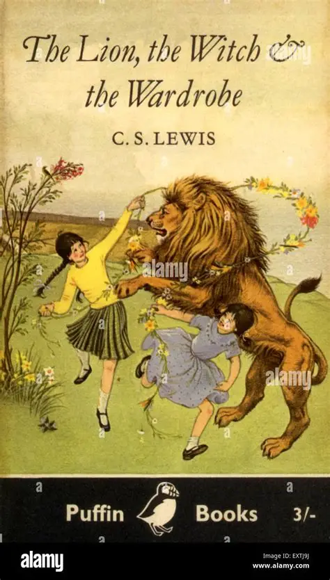
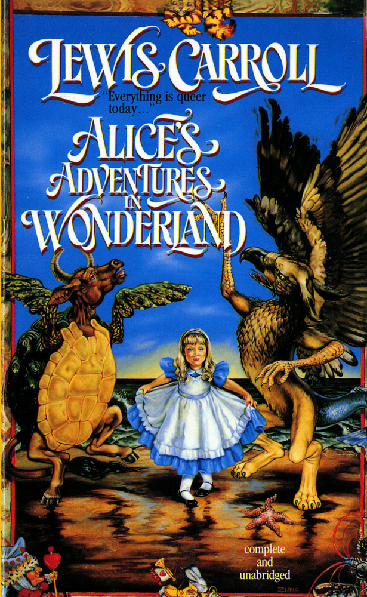
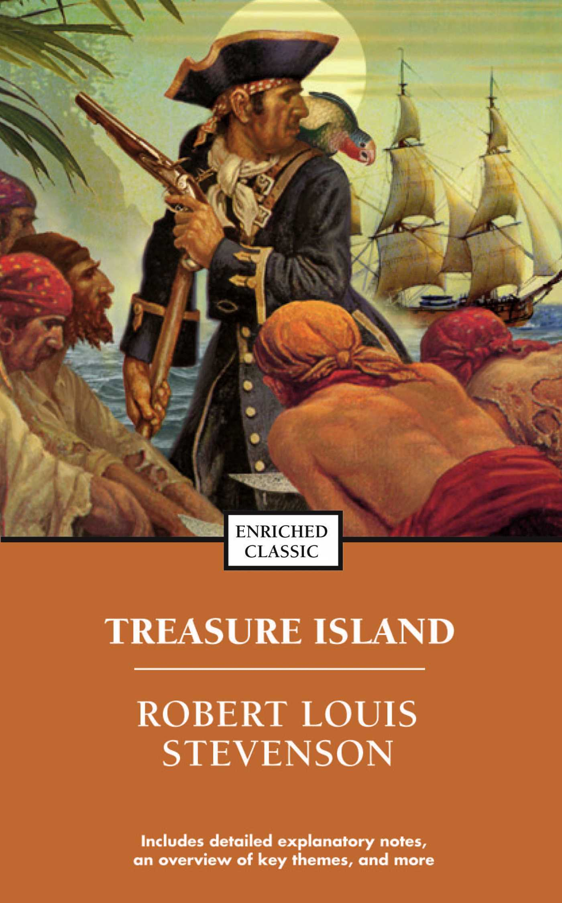
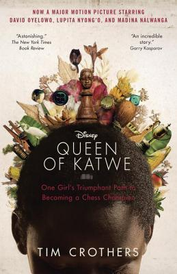
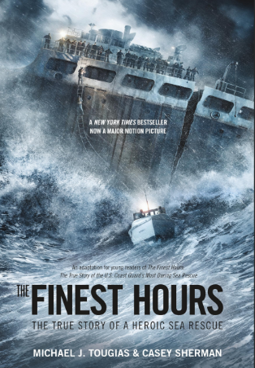

|
 Judul : The Chronicles of Narnia: The Lion, the Witch and the Wardrobe Penulis : C. S. Lewis Tahun : 2005 Kutipan : “Books Turned Into Disney Movies” |
 Judul : Alice’s Adventures in Wonderland Penulis : Lewis Carroll Tahun : 2010 Kutipan : “We’re all mad here. I’m mad. You’re mad.” |
 Judul : Treasure Island Penulis : Robert Louis Stevenson Tahun : 1950 Kutipan : “Fifteen men on the dead man’s chest— Yo-ho-ho, and a bottle of rum!” |
|
 Judul : Queen of Katwe Penulis : Tim Crothers Tahun : 2014 Kutipan : “Chess is the one thing in Phiona’s life she can control. Chess is her one chance to feel superior.” |
 Judul : The Finest Hours Penulis : Michael J. Tougias & Casey Sherman Tahun : 2009 Kutipan : “You have to go out, but you do not have to come back.” |